От анализа до приёмки – пять шагов
Цена фиксируется на втором шаге и дальше не меняется. Монтаж – один день, приёмка – по акту.
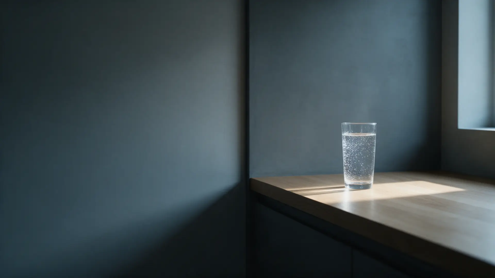
Фильтры для воды · монтаж · обслуживание
Анализ воды, подбор системы под его результат, цена фиксируется после диагностики. Оборудование названо, гарантия – письменно.
Приедем за пробой воды, подберём систему под анализ.
Что меняется
Собираем систему под анализ вашей воды – монтаж за один день. Цена – та, что назвали после диагностики.
Вода без очисткиЖёсткая, налёт, запах – уходит в быт и в чайник
Так звучит объявление первой попавшейся фирмы. Сравнивать два-три предложения по таким словам не получится: за ними ничего не стоит.
Поэтому у нас так: сначала анализ воды в лаборатории, потом система под его результат. Цена фиксируется после диагностики и не меняется; монтаж – один день; гарантия – письменно, талоном.
Цена фиксируется на втором шаге и дальше не меняется. Монтаж – один день, приёмка – по акту.
Замеряем жёсткость, железо, марганец, запах. По результату понятно, какие ступени нужны именно вашей воде. Анализ – основа подбора, а не «примерно по району».
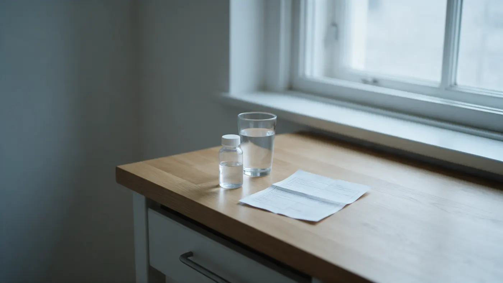
В смете: оборудование по названиям, работы, дата монтажа. Цена после диагностики не меняется. Предоплата – только на очистку для дома: 10 % при подписании, остальное после приёмки. Квартирные системы – без предоплаты.
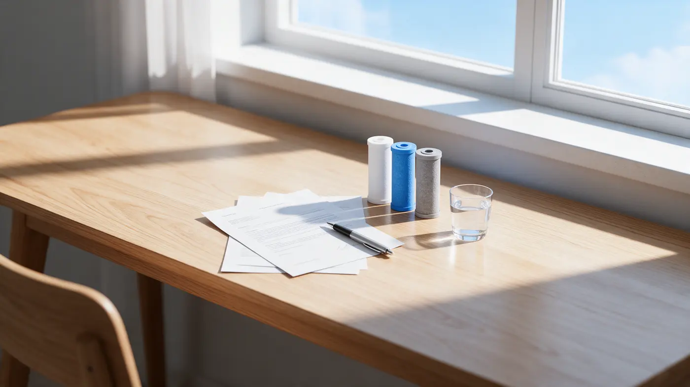
Дата монтажа согласована при подписании. Накануне подтверждаем время сообщением.
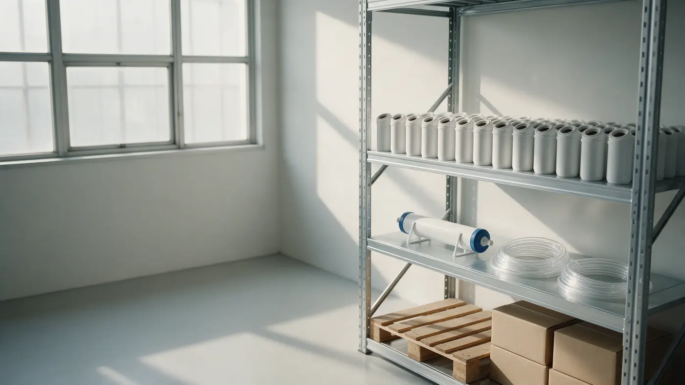
Установка под мойку или на вводе, кран на столешницу, подключение и проверка на протечки. Всё укрыто, мусор увозим с собой.
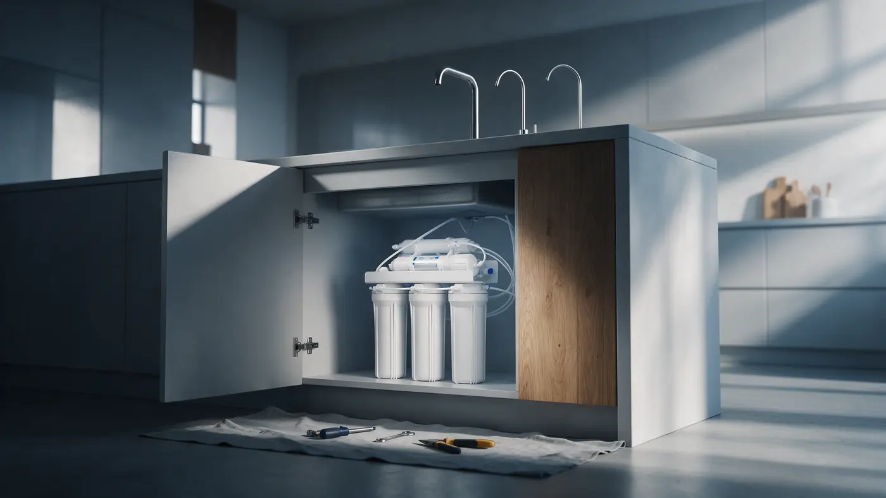
Разливаем воду из крана на глазах у вас. С актом отдаём гарантийный талон, паспорта на оборудование и график замены картриджей.
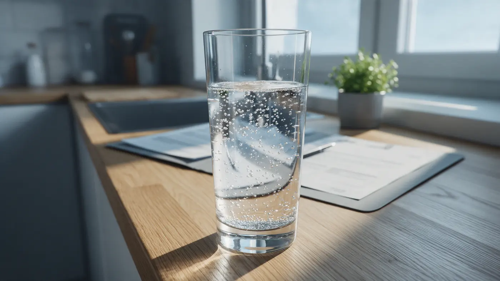
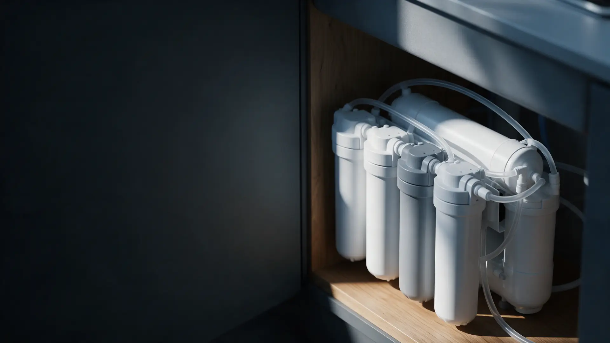
Из чего собираем
В смете записано: система обратного осмоса пятой ступени, тип очистки и число ступеней. Паспорт оборудования отдаём при приёмке.
Механика 5 мкм, умягчение, сорбция, мембрана, постуголь – набор записан в договоре: что ставим и зачем. Одной воде нужно умягчение, другой – железо и сорбция.
Кран на мойке в комплекте – кран, минерализатор или кулер: как договоримся, строкой в смете, а не «как получится».
Регенерация и замена картриджей – регламент лежит в папке после монтажа.
Компактная система под мойку для квартиры, система на вводе – для дома и скважины. Что подойдёт именно вам, покажет анализ.
Ниже – направления, от чего считать. Точную сумму назовём после анализа воды, и она не изменится.
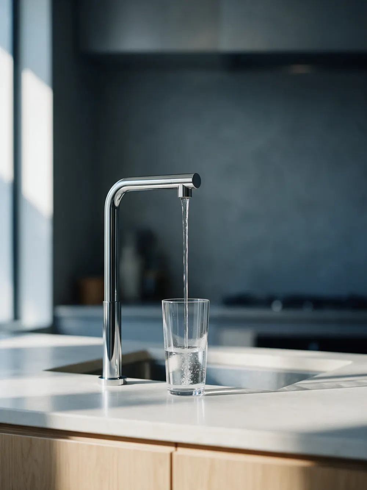
Система под мойку с отдельным краном для питьевой воды. Дополнительные ступени – строкой в смете.
Что входит
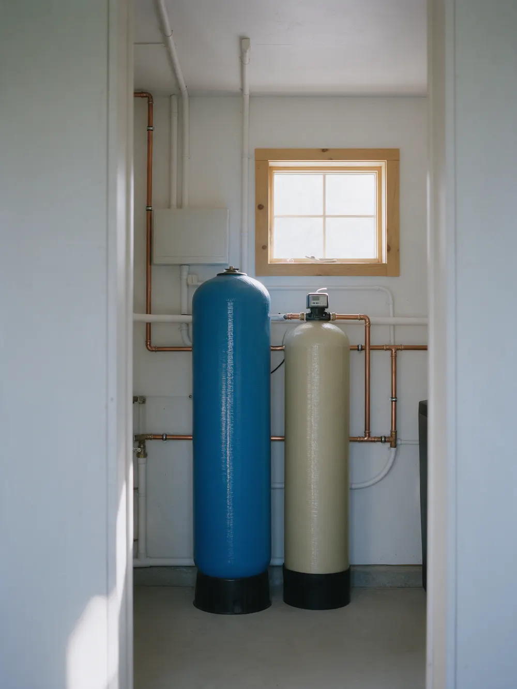
Система на вводе для скважины или колодца: жёсткость, железо, запах. Состав – по анализу вашей воды.
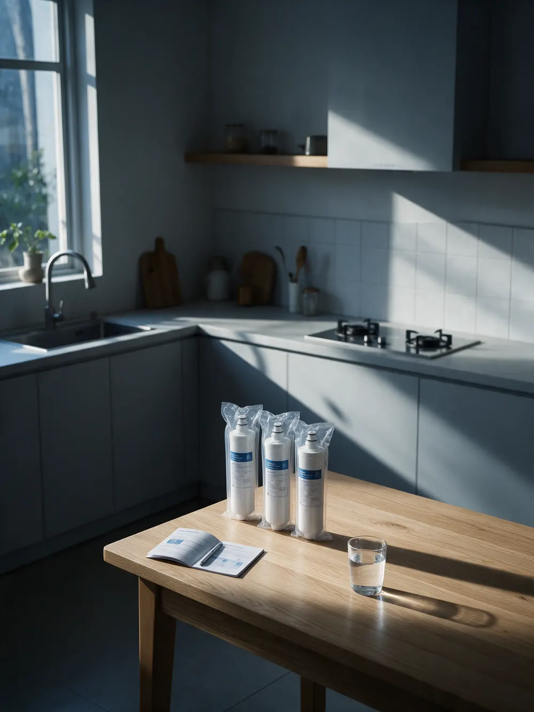
Замена картриджей, регенерация, сезонный сервис – с выездом специалиста. Приезжаем по графику из папки после монтажа.
Напишите, откуда у вас вода – водопровод, скважина или колодец, и закажем анализ: сумму назовём после него, и она не изменится.
Заказать анализ водыГарантийный талон выдаём при приёмке вместе с актом. Что в нём записано:
Заказать анализ воды
Напишите, откуда у вас вода – городской водопровод, скважина или колодец, и удобный день. Заберём пробу, подберём систему под результат и назовём сумму до монтажа.
Заказать анализ воды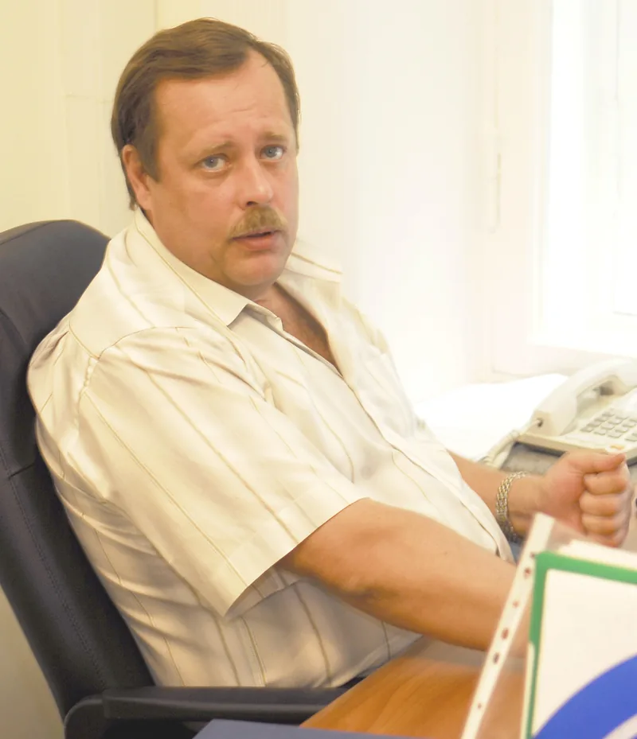